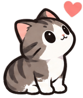
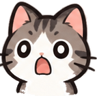
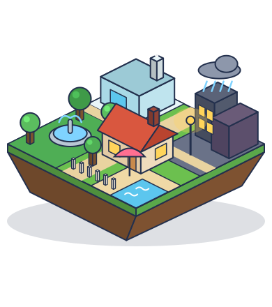
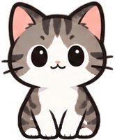

◀
Lv.1
▶
100%
★
★
★
성공!

잉크 사용
모모 체력
점수
다음 레벨 ▶
다시 도전
★
0
🔇
🐾
Lv.1
SAVE
M
O
M
O
목욕은 싫어! 모모를 지켜 줘

!
!
Lv.1
레벨
오늘의 도전
!
상점
이야기
📲 앱으로 설치
v2.9.2
상점
★
0
아이템
펜 꾸미기
모모 꾸미기
설정
🔊 소리
배경음악
끄기
작게
보통
크게
효과음
끄기
작게
보통
크게
📁 기록
레벨 기록, 별, 아이템, 꾸미기를 모두 지우고
1레벨 이야기부터 다시 시작해요.
처음부터 다시 하기
닫기
🌙 다크 모드에서 색이 이상할 때
이전 버전(v1) 하러 가기
🔒
챕터 2 · 마당
별 모으러 가기
닫기
레벨 선택
이동


건너뛰기
탭해서 계속 ▶
건너뛰기
다음 ▶